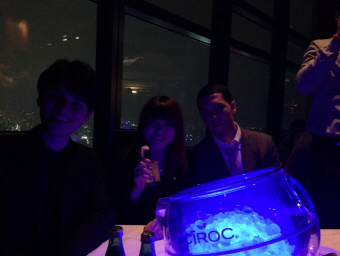

PARTICIPANTS:
DB ID: 0
Current name: You
Address book name: You
User name:
Phone Number:
Key:
DB ID: 415
Current name: とっとこちゃむ太郎 Habuka
Address book name: None
User name: とっとこちゃむ太郎
Phone Number:
Key:
Messages:
2013/09/25 19:53:40, "0:You":
はぶかさん、僕のオススメの店でディナーしましょう！
じゃばい美味しいよ！
2013/09/25 20:28:54, "415:とっとこちゃむ太郎 Habuka":
じゃばい！お誘いありがとうございます✨
お時間合えば是非
2013/09/25 20:49:37, "0:You":
いつなら時間があいますか？
2013/09/25 22:58:28, "415:とっとこちゃむ太郎 Habuka":
10月は土曜日の夕方しか空いてないですねぇ💦
2013/09/25 23:46:08, "0:You":
うん、嬉しい！
28日だな！
http://s.tabelog.com/tokyo/A1303/A130302/13017875/
2013/09/26 01:10:32, "415:とっとこちゃむ太郎 Habuka":
おぉ！いいですね✨スケジュール調整しておきます！
2013/09/26 03:08:31, "415:とっとこちゃむ太郎 Habuka":
あ、ごめんなさい！
９月はもうあいてる時間ないです…
10月になります
2013/09/26 06:44:44, "0:You":
問題ない
2013/09/26 08:41:29, "0:You":
あ！
そうか、そうか？！
間違っててごめん。
5日なんだ！
2013/09/26 08:50:04, "0:You":
店を考え直す
2013/09/26 09:20:00, "415:とっとこちゃむ太郎 Habuka":
５日はオッケー
2013/09/26 09:20:40, "0:You":
チャムちゃん！！
2013/09/26 09:21:26, "415:とっとこちゃむ太郎 Habuka":
５日このお店休みなんですか？
2013/09/26 09:26:48, "0:You":
開いてるよ
行こう、行こう！
2013/09/26 09:32:07, "415:とっとこちゃむ太郎 Habuka":
たぶん18時くらいから集まれます☆
2013/09/26 09:36:53, "0:You":
うん、うん！
18時
登録をしておきます
2013/09/26 23:06:25, "0:You":
チャムちゃん！
今暇？
2013/09/26 23:55:46, "415:とっとこちゃむ太郎 Habuka":
まだ帰ってないんですけど、帰ったら作品を作らなくちゃいけないので暇じゃないです…ごめんなさい…
2013/09/27 08:56:46, "0:You":
昨日、相談をしたかったことがあって。
会社で聞きます。
2013/09/27 09:21:21, "415:とっとこちゃむ太郎 Habuka":
おはようございます！
５時まで大変でした💦余裕なくてごめんなさい！
LINEでも聞きますよ！
2013/09/27 09:43:46, "415:とっとこちゃむ太郎 Habuka":
2013/09/28 13:32:04, "415:とっとこちゃむ太郎 Habuka":
突然ですが！
今日と明日ライブやるのでもし暇だったらよろしくお願いします
9月28日(土)
場所…新宿ルイードK4
開 演…17：10
※私のバンドが出る時間は20：50～です！
チケット…2000円➕ドリンク500円
↑わりと大きなライブハウスなので見やすいし聞きやすいと思います！
9月29日(日)
場所…高田馬場JETROBOT
【rojideの華音３周年ライブ】
開演20：00
※私のバンドが出る時間は21：40～です！
チケット…2000円➕ドリンク500円
↑場所は狭いとこですが、他のバンドさんの転換中にアート紹介もあります！
よろしくお願いします(*^^*)
2013/09/28 13:32:47, "0:You":
おお！
丸ちゃんを連れってていい？
2013/09/28 13:49:17, "415:とっとこちゃむ太郎 Habuka":
わぁぁぁ是非ともよろしくお願いします
2013/09/28 13:51:27, "415:とっとこちゃむ太郎 Habuka":
これそうですか⁇
もし今日来れたら
rojide（ロジデ）を見に来たトニーです、丸山です、と言って下さい
2013/09/28 15:45:23, "0:You":
丸が来れないって
ひでかとJJに聞いてみる
2013/09/28 15:50:52, "415:とっとこちゃむ太郎 Habuka":
ありがとうございます！無理しなくて大丈夫ですよ！💦
もし誰か来れたら、丸山ですって言って入って下さい(^.^)
2013/09/28 17:01:08, "0:You":
Ok
2013/09/28 17:14:30, "415:とっとこちゃむ太郎 Habuka":
ありがとうございます(*^^*)
2013/09/28 17:46:09, "0:You":
You sent a photo.
2013/09/29 10:55:00, "0:You":
昨日行きたかった。
BBQで飲み過ぎて無理だった。
2013/09/30 10:32:01, "0:You":
チャムちゃん！
また相談に乗っていい？
2013/09/30 10:33:52, "0:You":
家で仕事をしたいのよ。
けど寝る時間を減らしちゃうとキゲンが悪くなるし会社の仕事も遅くなるの。
2013/09/30 10:35:07, "0:You":
でもね！
この会社を早く辞めるのに個人で成功をしなきゃ
2013/09/30 17:43:00, "415:とっとこちゃむ太郎 Habuka":
おぉ！頑張って下さい
夢があるっていいですね！
2013/09/30 17:52:33, "0:You":
今日はお疲れ様
2013/09/30 22:42:31, "415:とっとこちゃむ太郎 Habuka":
お疲れ様！
2013/09/30 22:56:18, "0:You":
Chamuちゃん！
2013/09/30 22:57:07, "0:You":
考えたんだけどう。
12月まで彼女を作りたいのよ。
2013/09/30 22:58:23, "0:You":
ごめん。おやすみ！
2013/09/30 23:43:28, "415:とっとこちゃむ太郎 Habuka":
へぇー！彼女できるといいですね！
私は今から夜ご飯☆おやすみ！
2013/10/01 09:15:13, "0:You":
今日こそ丸ちゃんのお祝いしましょう
2013/10/01 09:17:06, "415:とっとこちゃむ太郎 Habuka":
2013/10/01 21:15:28, "415:とっとこちゃむ太郎 Habuka":
トニーさん…残念なお知らせです
５日ですがせっかく誘ってくれましたが、稽古が長引いて行けなくなりました💦
本当にごめんなさい
2013/10/01 21:16:35, "0:You":
OKです
2013/10/01 21:16:50, "415:とっとこちゃむ太郎 Habuka":
すみません！
2013/10/01 21:17:08, "0:You":
大丈夫だよ
2013/10/01 21:21:32, "0:You":
チャムちゃんは本当に可愛いから。
2013/10/01 21:24:38, "415:とっとこちゃむ太郎 Habuka":
ありがと！
2013/10/02 00:35:34, "0:You":
おやすみ！
2013/10/02 11:12:06, "0:You":
一緒にハロウィンパーティに行く？
https://www.facebook.com/events/195982913916213/
2013/10/02 13:06:08, "415:とっとこちゃむ太郎 Habuka":
トニーさんごめんなさいね💦
他の人を誘って下さい！💦
2013/10/02 13:31:32, "0:You":
Chamuちゃん！
2013/10/03 00:04:54, "0:You":
おやすみ！
2013/10/03 22:52:33, "0:You":
チームちゃん。
何も考えないで失礼なことを書いてしまった。
ごめん！
私のことを嫌いにならないで、ね！
2013/10/04 00:07:55, "415:とっとこちゃむ太郎 Habuka":
うん、気を付けた方がいいですね。私に謝る必要はないですが、あの発言は少しショックでした。
これから人数も少なくなるからね…。適当な発言はやめてほしいです。
2013/10/04 05:40:46, "0:You":
はい、わかりました。
2013/10/04 11:13:16, "0:You":
チャムがいないとさみしい
2013/10/04 12:04:02, "415:とっとこちゃむ太郎 Habuka":
トニーさん
好意を持ってくれるのはとても嬉しいです。
ですが、仕事にあまりそういう感情を持ち込まれるのは少し困ります…💦
いろいろ誘って下さるのは嬉しいのですが、もし私を恋愛対象にしていたら、申し訳ないのですが他の女の子を誘ってアプローチして下さい
トニーさんとは普通に仕事仲間として頑張りたいと思っています！
私かなり変な人なので、なかなか人と付き合うの難しい女なんです
今後ともよろしくお願いしますm(^^)m💦
2013/10/04 12:10:53, "0:You":
そうか、そうか？！
わかりました！
2013/10/04 12:14:43, "415:とっとこちゃむ太郎 Habuka":
仕事がんばろー
ではでは(^^)
2013/10/04 12:15:59, "0:You":
付き合えないなら強いチームになろう
2013/11/30 10:58:35, "415:とっとこちゃむ太郎 Habuka":
今週日曜日まで舞台やってるので、もしお時間ありましたらよろしくお願いします
2013/11/30 11:54:15, "0:You":
thnx!行けたら行く！
2013/11/30 11:56:35, "415:とっとこちゃむ太郎 Habuka":
ありがとうございます
2013/12/03 17:34:53, "0:You":
むらいまり
2014/01/15 19:41:24, "415:とっとこちゃむ太郎 Habuka":
忘れ物した！
2014/01/15 19:41:53, "0:You":
何を？
2014/01/15 19:41:58, "415:とっとこちゃむ太郎 Habuka":
机のしたに袋あるよね…
2014/01/15 19:42:08, "415:とっとこちゃむ太郎 Habuka":
取りに行く(/ _ ; )
2014/01/15 19:42:28, "0:You":
持って来ましょうか？
2014/01/15 19:42:52, "415:とっとこちゃむ太郎 Habuka":
38階エレベーターに来てくれると嬉しい！
2014/01/15 19:43:19, "0:You":
着いた
2014/01/15 19:43:26, "415:とっとこちゃむ太郎 Habuka":
2014/01/15 19:43:37, "415:とっとこちゃむ太郎 Habuka":
今エレベーター！
2014/01/15 19:44:52, "415:とっとこちゃむ太郎 Habuka":
2014/01/20 19:59:51, "0:You":
明日のパーティーに二次会もあるんだって！
2014/01/20 20:00:59, "415:とっとこちゃむ太郎 Habuka":
二次会行く？
私は帰るかなぁ
2014/01/20 20:02:20, "0:You":
私が二次会にも行くよ。
明日の様子を見て決めたらいいよ
2014/01/20 20:04:32, "415:とっとこちゃむ太郎 Habuka":
そうする
2014/01/21 18:48:23, "415:とっとこちゃむ太郎 Habuka":
ちょっと待ってね
2014/01/21 18:48:55, "0:You":
うん！
仕事をしてて待てるから大丈夫よ
2014/01/21 18:59:42, "415:とっとこちゃむ太郎 Habuka":
オッケー！終わったらトニーさんとこいくね！
2014/01/21 22:11:22, "0:You":
You sent a photo.
2014/01/21 22:11:22, "0:You":
You sent a photo.
2014/01/21 22:11:22, "0:You":
You sent a photo.
2014/01/21 22:11:23, "0:You":
You sent a photo.
2014/01/21 22:11:24, "0:You":
You sent a photo.
2014/01/21 22:11:24, "0:You":
You sent a photo.
2014/01/21 22:11:25, "0:You":
You sent a photo.
2014/01/21 22:11:25, "0:You":
You sent a photo.
2014/01/21 22:21:18, "0:You":
You sent a photo.
2014/01/21 22:21:18, "0:You":
You sent a photo.
2014/01/21 22:21:19, "0:You":
You sent a photo.
2014/01/22 17:42:52, "0:You":
今気まずそうで話しかけれなかった。
いじめられてるの？
2014/01/22 17:46:39, "0:You":
カウアンはまたパーティーをやってるよ。
今回81人を超えてる
2014/01/22 17:46:48, "0:You":
You sent a photo.

2014/01/22 19:13:03, "415:とっとこちゃむ太郎 Habuka":
いじめられてないよ♪平和だよ☆
予定あるかも…確認したら連絡する！
2014/01/27 19:12:25, "0:You":
後で話したいことがあるから。
大切な話ではないから急がない。
2014/01/27 19:36:48, "415:とっとこちゃむ太郎 Habuka":
ごめん、もう会社出ちゃった(*_*)
2014/01/27 19:43:36, "415:とっとこちゃむ太郎 Habuka":
なんだ？
2014/01/27 19:57:31, "0:You":
アイリンの話しだけど〜
私が人の悪い話はしないけど、じゅんじゅんを守るためにじゅんじゅんに話した。
2014/01/27 19:59:14, "0:You":
アイリンがじゅんじゅんに告白をしたら、じゅんじゅんが私に相談をした。
私がじゅんじゅんの見方だからアイリンの本当のを全部話した。
2014/01/27 20:01:21, "0:You":
じゅんじゅんは全部を分かった時にアイリンをふった。
2014/01/27 20:02:55, "415:とっとこちゃむ太郎 Habuka":
2014/01/27 20:03:04, "415:とっとこちゃむ太郎 Habuka":
どうした⁇
2014/01/27 20:03:19, "0:You":
私が友達を大切にする。
2014/01/27 20:03:29, "415:とっとこちゃむ太郎 Habuka":
何があったの⁇
2014/01/27 20:03:58, "415:とっとこちゃむ太郎 Habuka":
2人は喧嘩してるの⁇
2014/01/27 20:05:12, "0:You":
エレベーターを降りたところでチャムちゃんが言うったことを気に成ってて。
2014/01/27 20:05:35, "415:とっとこちゃむ太郎 Habuka":
私何を言った？
2014/01/27 20:06:16, "415:とっとこちゃむ太郎 Habuka":
2014/01/27 20:07:10, "0:You":
一緒にセックスをしたとか嘘を言わないでね！って
2014/01/27 20:07:34, "415:とっとこちゃむ太郎 Habuka":
そんなこと言ってないよ？
2014/01/27 20:08:30, "0:You":
じゃ！安心だ。
今の会話を忘れてて
2014/01/27 20:08:43, "415:とっとこちゃむ太郎 Habuka":
ヨハンに、僕はちゃむちゃんから中指立ててファックって言われたって言わないでね、って冗談言ったんだよw笑
2014/01/27 20:09:33, "415:とっとこちゃむ太郎 Habuka":
2014/01/27 20:09:55, "0:You":
そうかそうか？！
勘違いをした、ごめん
2014/01/27 20:10:18, "415:とっとこちゃむ太郎 Habuka":
イェー！
まぁ2人を見守ろう！
2014/01/27 20:14:57, "0:You":
None
2014/01/30 14:20:07, "415:とっとこちゃむ太郎 Habuka":
エレベーターの近くのトイレにいるよ！
2014/01/30 14:20:23, "0:You":
向かいに来る
2014/01/30 14:20:37, "0:You":
入っていい？
2014/01/30 20:11:50, "0:You":
明日のパーティーの情報を送っておく
2014/01/30 20:11:56, "0:You":
中目黒をベースに東京のアートシーンを世界へ牽引する
オーガニックアートスペース、ベリー。
輝かしい新年を、アートと音楽を軸にここベリーへ集う
世界中から集まった コミュニティーと共に祝う新年会!
前回たくさんの人に来て頂き大成功で終えた忘年会に続き、
今回は新年会のお知らせです。
今回ももちろんエントランスフリーで誰でも気軽に参加可能!
DJブースに卓球台、そして今回は東京をベースに活動し、
NYのアートショーにも度々参加、フランスのweb magizine
「The Wild Magazine」にも ピックアップされるなど、
世界で活躍するアーティストSAYORIの ライブペインティングも決定。他にも独自のアートを追求するアーティスト達のアートを展示。
素晴らしいアートと音楽に包まれて新たな一年の門出を祝いましょう!
※20:00 - 22:00に入場した方に限りマテカクテル¥500→¥300サービス実施!!
DJ : Billie
Minami
Kateb
DJ 610
RICOHILOTA
Rinaco
And more!!
Live painting : Sayori (http://www.sayoriwada.com/)
Entrance : Free!
Organizer : Aki, Nao, Bon
日時：1月31日(金) 20:00 - till late
@Berry Nakameguro (http://www.justanotherspace.com/)
〒153-0051 東京都目黒区上目黒1-3-9 藤屋ビル3F
2014/01/30 21:00:14, "415:とっとこちゃむ太郎 Habuka":
ありがとう！
トニーは参加する？
2014/01/30 21:46:41, "0:You":
うん！行こう！
2014/01/31 10:00:44, "415:とっとこちゃむ太郎 Habuka":
トニーが行くなら行く！
2014/01/31 10:29:50, "0:You":
チャムちゃんはかわいい！！
2014/01/31 10:32:27, "0:You":
ちなみに、4/29を開けておいて
2014/01/31 10:32:37, "0:You":
You sent a photo.

2014/01/31 19:30:24, "415:とっとこちゃむ太郎 Habuka":
20時になる(/ _ ; )
2014/01/31 19:31:02, "0:You":
待ってるよ
2014/01/31 19:31:28, "415:とっとこちゃむ太郎 Habuka":
2014/01/31 19:57:42, "415:とっとこちゃむ太郎 Habuka":
ごめん。もう少し長引くわ
2014/01/31 20:00:55, "0:You":
大丈夫よ
仕事は大切
2014/01/31 20:02:10, "415:とっとこちゃむ太郎 Habuka":
もしあれだったら私不参加で先に行っていいですよ💦
2014/01/31 20:08:26, "0:You":
頑張って！
2014/01/31 20:22:09, "415:とっとこちゃむ太郎 Habuka":
2014/01/31 20:22:44, "0:You":
私も仕事をしてて待ってるよ
2014/01/31 20:30:31, "415:とっとこちゃむ太郎 Habuka":
オッケー！ありがとう！
2014/01/31 22:25:36, "0:You":
http://facebook.com/cham.kerero
2014/01/31 22:26:03, "415:とっとこちゃむ太郎 Habuka":
http://facebook.com/cham.kerokero
2014/01/31 22:45:19, "415:とっとこちゃむ太郎 Habuka":
どこ？
2014/01/31 23:04:49, "0:You":
You sent a photo.
2014/02/01 01:34:12, "415:とっとこちゃむ太郎 Habuka":
トニー！今日もありがとう！おやすみ
2014/02/05 14:01:56, "415:とっとこちゃむ太郎 Habuka":
トイレにいます！
2014/02/05 14:05:09, "0:You":
エレベーターで待ってるよ
2014/02/06 14:03:36, "415:とっとこちゃむ太郎 Habuka":
ランチまだだっけ？
2014/02/06 14:04:15, "415:とっとこちゃむ太郎 Habuka":
14:30？もういるよ！
2014/02/06 14:04:24, "0:You":
お弁当を並んでカフェテリアで
2014/02/06 14:04:40, "0:You":
お弁当屋さんはまだなの？
2014/02/06 14:04:54, "415:とっとこちゃむ太郎 Habuka":
お弁当屋いるよ！なくなるよ？
2014/02/06 14:05:07, "415:とっとこちゃむ太郎 Habuka":
みんな来ない…
2014/02/06 14:05:18, "0:You":
並びに行こう
2014/02/06 14:06:04, "415:とっとこちゃむ太郎 Habuka":
売り切れました！
2014/02/06 14:06:47, "0:You":
じゃ！アイリン達とコンビニへ買いに行こう
2014/02/07 15:11:56, "415:とっとこちゃむ太郎 Habuka":
先にいってるよ♪
2014/05/27 18:56:29, "0:You":
ちゃむちゃん！
3Dアニメーション出来る？
3Dアニメターが必要なんです
2014/05/27 19:02:44, "415:とっとこちゃむ太郎 Habuka":
ごめん、全然できない。。
ちょっっっとしかやったことない！
2014/05/27 19:03:17, "0:You":
そうか！そうか？！
OK!
2014/11/09 17:18:46, "415:とっとこちゃむ太郎 Habuka":
トニー！元気にしてるjoyful？
実は今度舞台をやるので、よかったら見に来てくれると嬉しいですO pose
2014/11/09 17:19:32, "415:とっとこちゃむ太郎 Habuka":
～演劇集団ホシノハコ 第3回本公演～
『あ、流れ星！』
【日時】
2014年12月3日(水)～12月7日(日)
12/3(水)★19:00～
12/4(木)★15:00
12/5(金)★19:00～
12/6(土)★15:00～
12/7(日)★17:30～
【劇場】上野ストアハウス
所在地：〒110-0014 台東区北上野1-6-11ノルドビルB1
アクセス：JR上野駅入谷口より徒歩5分、改札からは約8分。日比谷線入谷駅より徒歩4分。
【チケット】前売り￥3200／当日￥3700 ※全席自由
【あらすじ】
全力で夢を追いかけていたあの頃…。
TVで引っ張りだこの大人気俳優滝澤と、弱小劇団で夢を諦めかける楓。
別々の道をゆく2人は、共通の叶えたい想いがあった。
「流れ星っていうのは皆の夢だと思うんだ。光っては流れて、光っては流れて。そしてその夢のチャンスを掴むのは、それこそ流れ星のように一瞬しかないんだ」
あなたは、そんな流れ星を掴んでみたいと思いませんか？
2014/11/09 17:20:04, "415:とっとこちゃむ太郎 Habuka":
もしこの日予定がなかったら是非見に来てほしいですjoyfulよろしくお願いします✨
2014/11/09 17:30:40, "0:You":
ありがとう〜
2014/11/09 17:31:31, "415:とっとこちゃむ太郎 Habuka":